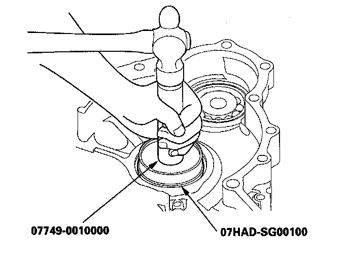
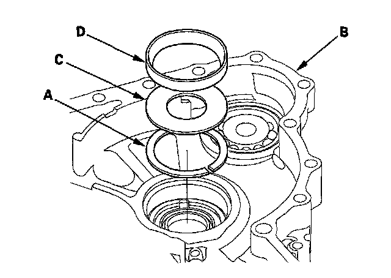

(Differential)
Component Location IndexA/T Differential Component Location Index:
Backlash Inspection
1. Remove the final driven gear and transfer drive gear from the differential carrier.
2. Install both axles into the differential assembly (A) and place the axles on V-blocks (B).
3. Measure the backlash of the pinion gears (C) with a dial indicator (D).
Standard (New): 0.05-0.15 mm (0.002-0.006 in.)
4. If the backlash is out of standard, replace the differential carrier.
5. Install the final driven gear and transfer drive gear on the differential carrier.
Differential Carrier, Final Driven Gear, and Transfer Drive Gear Replacement
NOTE: Inspect and adjust the bearing preload whenever the carrier is replaced.
1. Remove the final driven gear (A) and transfer drive gear (B) from the differential carrier (C).
NOTE: The final driven gear bolts have left-hand threads.
2. Install the final driven gear with the chamfered side on the inner bore facing the differential carrier.
3. Install the bolts through the differential carrier to the transfer drive gear.
4. Tighten the bolts to the specified torque in a crisscross pattern.
Carrier Bearing Replacement
Special Tools Required
Attachment, 45 x 55 mm 07MAD-PR90100
NOTE:
^ The bearing and outer race should be replaced as a set.
^ Inspect and adjust the bearing preload whenever the bearing is replaced.
^ Check the bearing for wear and rough rotation. If the bearing is OK, removal is not necessary.
1. Remove the carrier bearing (A) with a commercially available bearing puller (B) bearing separator (C) and stepper adapter (D).
2. Install the new carrier bearing using the attachment (45 x 55 mm) and the press.
NOTE:
^ Press the bearing on until it bottoms.
^ Use the small end of the attachment (45 x 55 mm) to install the bearings.
^ Press the bearing on securely so there is no clearance between the bearing and the differential carrier.
Oil Seal Replacement
Special Toots Required
^ Driver 07749-0010000
^ Oil seal driver attachment 07GAD-PG40100
^ Oil seal driver attachment 07JAD-PH80101
1. Remove the oil seal from the transmission housing.
2. Remove the oil seal from the torque converter housing.
3. Install the new oil seal flush to the transmission housing using the drive and the oil seal driver attachment.
4. Install the new oil seal to the torque converter housing using the drive and the oil seal driver attachment.
Carrier Bearing Outer Race Replacement
Special Tools Required
^ Driver 07749-0010000
^ Attachment, 83 mm 07HAD-SG00100
^ Attachment, 78 x 80 mm 07NAD-PX40100
NOTE:
^ Replace the bearing with a new one whenever the outer race is replaced.
^ Do not use shim(s) on the torque converter housing side.
^ Adjust the preload after replacing the bearing and the outer race.
^ Coat all parts with ATF during installation.
1. Remove the bearing outer race (A) spacer (B) and 85 mm thrust shim (C) from the transmission housing (D) by heating the housing to about 212°F (100°C) with a heat gun (E). Do not heat the housing more than 212 (100°C).
2. Install the 85 mm thrust shim (A) spacer (B) and outer race (C) in the transmission housing (D).
3. Using the driver and the attachment (83 mm) drive the outer race securely in the housing so there is no clearance between the outer race, spacer, shim, and housing.

4. Remove the plate (A) and remove the bearing outer race (B) and spacer (C) from the torque converter housing (D).
5. Install the spacer and the new outer race in the torque converter housing.
6. Drive the bearing outer race securely in the housing using the driver and the attachment (78 x 80 mm).
7. Install the plate over the outer race in the torque converter housing.
Carrier Bearing Preload Inspection
Special Tools Required
^ Driver 07749-0010000
^ Attachment, 83 mm 07HAD-SG00100
^ Preload inspection tool 070AJ-0020101
NOTE: If the transmission housing, torque converter housing, differential carrier, tapered roller bearing, bearing outer race, or thrust shim were replaced, the bearing preload must be adjusted.
1. Remove the bearing outer race (A) spacer (B) and 85 mm thrust shim (C) from the transmission housing (D) by heating the housing to about 212°F (100°C) with a heat gun (E). Do not heat the housing more than 212°F (100°C).
NOTE: Let the transmission housing cool to room temperature before adjusting the bearing preload.
2. Replace the tapered roller bearing when the outer race is to be replaced.
3. Do not use a shim on the torque converter housing side.
4. Install the 85 mm thrust shim (A) in the transmission housing (B). If you replace the 85 mm thrust shim with a new one, use the same thickness shim as the old one.

5. Install the spacer (C) and the bearing outer race (D) in the transmission housing.
6. Drive the outer race securely in the housing using the driver and the attachment (83 mm) so there is no clearance between the outer race, spacer, shim, and housing.
7. Install the differential assembly (A) in the torque converter housing (B) and install the gasket (C) and the two dowel pins (D) on the housing.
8. Install the transmission housing (E) and install the mounting bolts (24 bolts) with the transmission hangers (F) and the ground terminal bracket (G) then tighten the bolts.
9. Rotate the differential assembly in both directions to seat the bearings.
10. Measure the starting torque of the differential assembly with the preload inspection tool, a torque wrench (A) and a socket (B). Measure the starting torque at normal room temperature in both directions.

11. If the measurement is out of standard, remove the thrust shim and measure its thickness.
12. Select a new thrust shim. To increase the starting torque, increase thickness of the thrust shim. To decrease the starting torque, decrease the thickness of the thrust shim.
Changing the shim to the next size will increase or decrease the starting torque about 0.5-0.6 N-m (5-6 kgf-cm, 4-5 lbf-in.).
13. Install the new thrust shim, then recheck the starting torque.